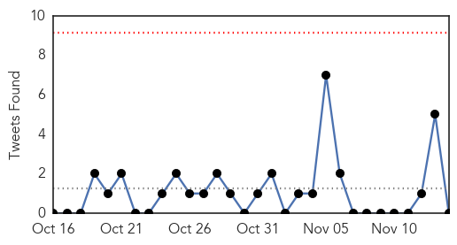
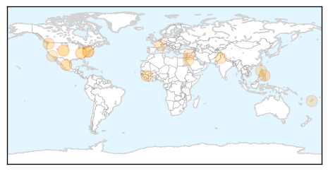
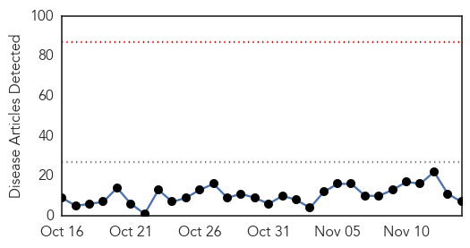
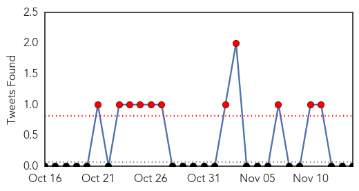

Unknown
30-Day Web Trend
0 alerts, 0 warnings

30-Day Twitter Trend
0 alerts, 0 warnings

Article Locations
Article Confidences

Top Articles:
- 0.935
- Sonora / Tuolumne News, Sports, & Weather, Angels Camp, Twain Harte, Jamestown
- 0.862
- More Chipotle restaurants may be linked to E. coli outbreak
- 0.848
- Chipotle reopens in Kent after E. coli outbreak
- 0.796
- Outside Chipotle outbreak, foodborne illness a wider problem
- 0.738
- Eradicating the Guinea Worm Disease
- 0.725
- Leyte town’s LGU addresses schistosomiasis spread threat
- 0.696
- World Celebrates World Diabetes Day Today
- 0.648
- World leaders react to ‘barbaric’ Paris attacks
- 0.648
- Hollande says Paris attacks an ‘act of war’ by Islamic State group
- 0.642
- Boulder County health care advocates help patients navigate care plans, charges
- 0.620
- Do you have a heart failure?
- 0.610
- Warning over superbug
- 0.603
- Boulder County health care advocates help patients navigate care plans, charges
- 0.586
- Resist reaching for antibiotics to treat coughs and colds - first World Antibiotic Awareness Week starts
- 0.562
- New Delhi Times – India's leading opinion based newspaper
- 0.546
- Advances in the Management of Pulmonary Arterial Hypertension
- 0.503
- 45 people sickened in Northwest E. coli outbreak
Top Tweets:
- 0.796
- Llegamos a sesentipico de grados F en Cayey.
- 0.639
- No pierdas tu tiempo orando por víctimas de ataques en París. ¡Ayúdalos de verdad! Visita el enlace para donar: https://t.co/aGWRkHEZrS
Dengue Fever
30-Day Web Trend
0 alerts, 0 warnings

30-Day Twitter Trend
5 alerts, 3 warnings

Article Locations

Article Confidences

Top Articles:
- 0.994
- 101 cases of dengue fever confirmed on Hawaii Island
- 0.877
- Lawmakers: DOH needs to reach deeper into communities affected by dengue
- 0.877
- Lawmakers urge DOH to travel into communities to combat dengue
- 0.851
- Big Island Dengue Fever Count at 38
- 0.792
- Big Island lawmaker wants state to offer free dengue fever tests
- 0.684
- Dengue Control Task Force to be Constituted in Pondy
- 0.656
- New funding boosts research for controlling TB
Top Tweets:
- 0.566
- Flavivirus news: 38 cases of locally acquired dengue fever confirmed on Hawaii Island - KHON2: ... https://t.co/P9w69GIOqF pathogenposse